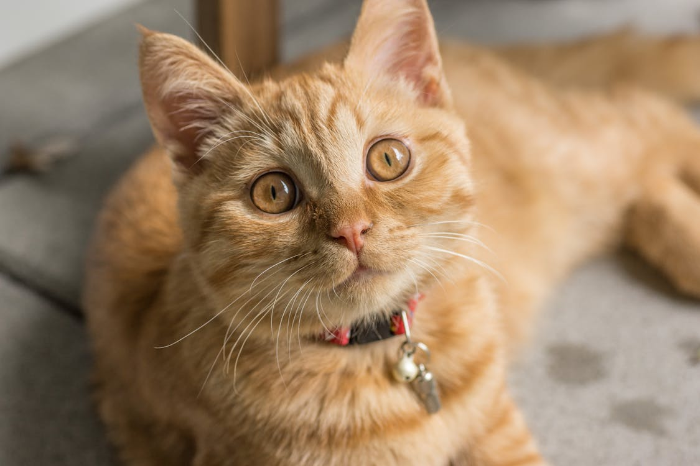

Cat
Origin and Habitat:
Cats, also known as domestic cats or house cats, are small, carnivorous mammals that have been domesticated for thousands of years. They are found in various environments around the world, from urban areas to rural settings, often adapting well to human habitats.
Physical Traits:
Cats are known for their agility, sharp retractable claws, and keen senses. They have flexible bodies and teeth adapted for hunting small animals such as mice and birds. Their fur can vary widely in color and pattern, and their eyes often possess a reflective layer called the tapetum lucidum, which enhances their vision in low light.
Behavior:
Cats are generally solitary hunters but can be social in domesticated settings. They communicate through vocalizations, body language, and pheromones. Cats spend a significant amount of time grooming themselves and are known for their cleanliness and fastidious habits.
Lifespan:
Domestic cats typically live for 12 to 15 years, but many can live into their twenties with proper care. Their lifespan can be influenced by factors such as diet, healthcare, and living conditions.